Collaborative path planning
Sergei Zobov
Created: 2023-04-27 Thu 18:58
Intro
About me
- Senior Software Engineer at Micropsi Industries
- Senior Software/Research Engineer at ARRIVAL
- This talk is based on the experience at ARRIVAL
- Project: Autonomous factory fueled by Autonomous Robots
Environments
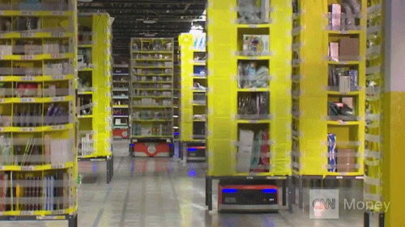
Figure 1: source
- Warehouses / Factories
- Video Games / Miniature Wunderland!
- Traffic routing (trains, cars)
One beast, many faces
- Multi-Agent Path Planning
- Multi-Agent Path Finding
- Multi-Robot Motion Planning
- Collaborative Path Planning
One beast, many faces

Figure 2: source
- Agent == Robot
Definition
- a set \(A = \{1,2,...,k\}\) of \(k\) agents;
- an undirected Graph \(G=(V,E)\), where \(V\) is the node set, and \(E\) is the edge set. The nodes represent the possible locations of the agents, while the arcs are the possible connections between such positions;
- a map \(s: A \to V\) that associates each agent with its starting point;
- a map \(t: A \to V\) that associates each agent with its target point.
- Find a set of paths \(P = \{p_1, \ldots, p_n\}\) such that \(p_i\)’s are feasible paths for respective agent \(A_i\)’s and no two paths \(p_i, p_j\) are in collision.
Discrete vs Continuous
- Roadmap as a graph
- We can always discretize space
- But it always comes with a cost of increasing space and complexity
Search-based algorithms
Dijkstra’s
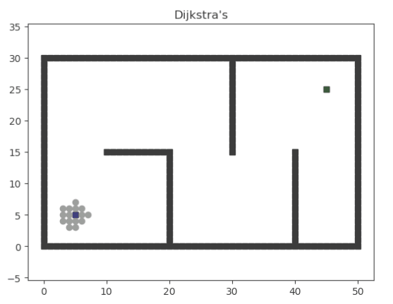
Figure 3: source
- An algorithm for finding the shortest paths between nodes in a weighted graph.
- \(\Theta(|E| + |V| \log|V|)\)
- Problem 1: searches in all directions
- Problem 2: not cooperative
A*

Figure 4: source
- Adds a heuristic function to direct the search towards a goal
- \(f(n) = g(n) + h(n)\)
- Problem 1: how to choose a better heuristic?
- Problem 2: not cooperative
Local Repair A*
- Cooperative: path planned for each agent individually and re-calculated on each collision.
- Problem 1: cycles and bottlenecks are common
- Problem 2: agents are fixed at the goal positions
Cooperative A*
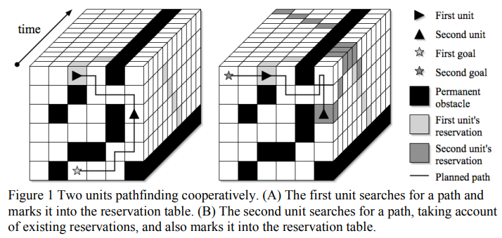
Figure 5: source
- Differce from LRA* only by reservation table
- Can also be called Space-time A*
- Problem 1: Heuristic is Manhattan distance
- Problem 2: Depends on the order of agents
Hierarchical Cooperative A*
- Hierarchy: several “steps” of the algorithm
- Step 1: calculate all distances in 2D without other agents
- Step 2: use paths from Step 1 as a heuristic for space-time
- Optimization: Reverse Resumable A* (RRA*) = spatial A* that starts from the target
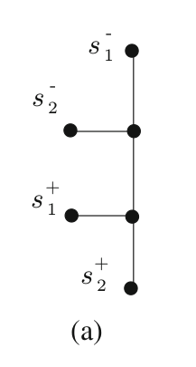
Figure 6: source
- Problem 1: agents are fixed at the goal positions
- Problem 2: sensitivity to agent ordering
- Problem 3: calculate a complete route to the destination in a large, three-dimensional state space
Windowed Hierarchical Cooperative A*
- Space-time A* during \(d\) steps (search depth) + spatial A* from step \(d\).
- Other agents are only considered for \(d\) steps (via the reservation table) and are ignored for the remainder of the search
- Windowed search can continue once the agent has reached its destination: The agent’s goal is no longer to reach the destination but to complete the window.
Experiments: environment
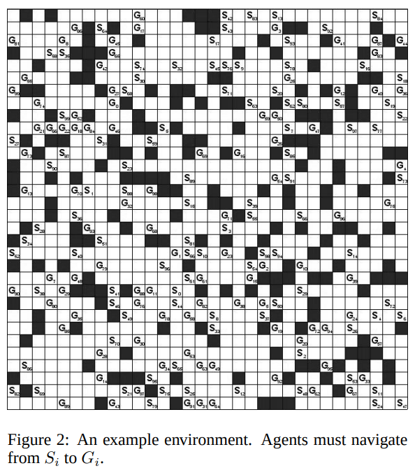
Figure 7: source
Experiments: success rate to a number of agents
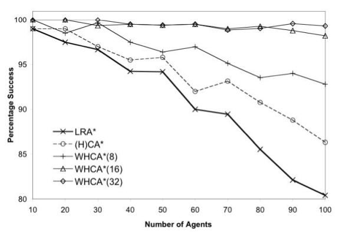
Figure 8: source
Experiments: number of cycles to number of agents
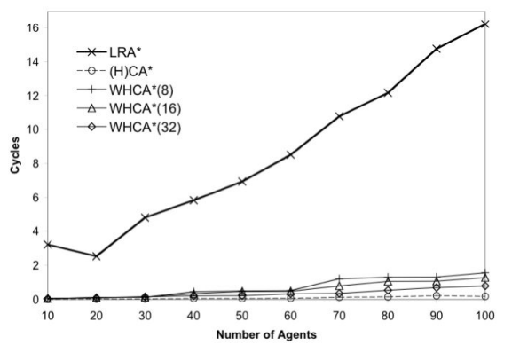
Figure 9: source
Network flow-based
Network flow
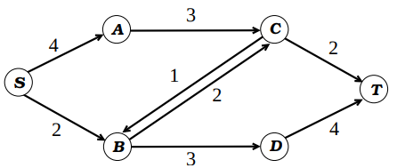
Figure 10: source
- network \(N = (G, u, c, S)\).
- Directed graph \(G = (V, E)\).
- \(u, c : E → Z+\) maps defining the capacities and costs on edges.
- \(S ⊂ V\) as the set of sources and sinks.
- \(S+\) denoting the set of sources and \(S−\) denoting the set of sink vertices.
- Edge capacity constraint: \(∀e ∈ E\), \(f(e) ≤ u(e)\)
- Flow conservation constraints: \(∀v∈V\) \(\sum_{e∈δ^+ (v)} f(e) − \sum_{e∈ δ^- (v)} f(e) = 0\)
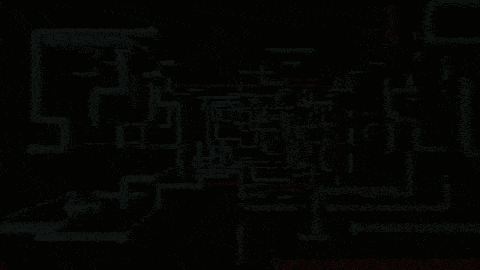
- What is the maximum number of units that can be transferred from the source nodes to the sink nodes?
- \(\min\sum_{e ∈ E} c(e) · f (e)\)
Time-expanded graph
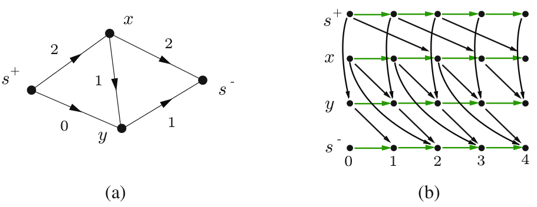
Figure 11: source
Time-expanded graph with Gadget
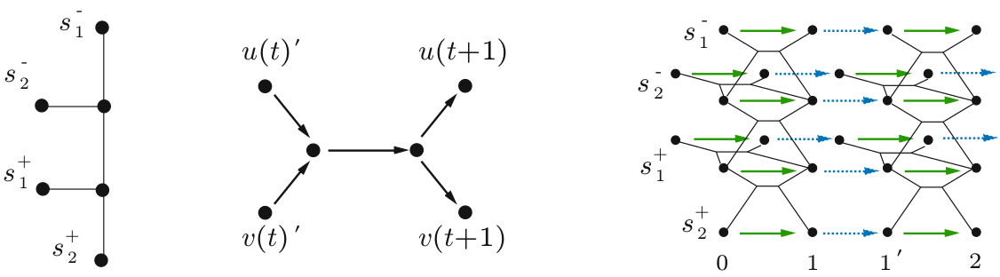
Figure 12: source
- create \(2T + 1\) copies of vertices from \(G\), with indices 0, 1, 1’,… \(T'\).
- denote these copies \(v(0) = v(0), v(1), v(1'), v(2), ..., v(T')\).
- add gadget each edge \((u, v) ∈ G\) and time steps \(t, t + 1, 0 ≤ t < T\).
- Gadget: assign unit capacity to all edges, unit cost to the horizontal middle edge, and zero cost to the other four edges.
- Green – unit capacity and cost, blue – unit capacity and zero cost.
Optimal solutions
Figure 13: source
- With fixed \(T\) can give an optimal solution for a single-commodity problem with such objectives:
- Minimizing the average time it takes for all agents to reach their goals.
- Minimizing the time it takes for the last agent to reach its goal.
Problems
- Problem 1: how to find an optimal \(T\)? Authors give only the upper bound for \(T\).
- Problem 2: not for a real-time: \(O(n V E \ln(V))\) on a time-expanded graph!
- Problem 3: how to solve a multi-commodity problem?
Multi-commodity problem
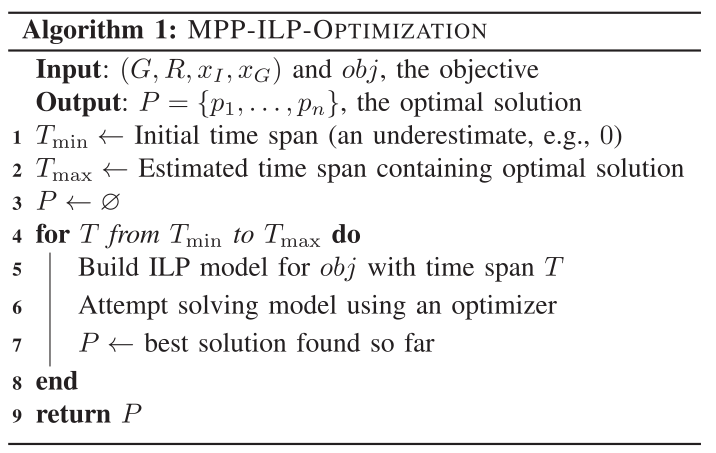
Figure 14: source
- Network flow formulation, it becomes possible to establish Integer Linear Programming (ILP) models for optimal multi-agent path planning formulations.
- Add extra optimizations with a slight loss of optimality.
How can it look in code?
model.Add(
model.Sum(incoming_flow_variables) - model.Sum(outcoming_flow_variables)
== 0,
f"flow_conservation_for_node_{node_id}_constraint",
)
...
status = model.Solve()
assert status == pywraplp.Solver.OPTIMAL, status
Optimizations
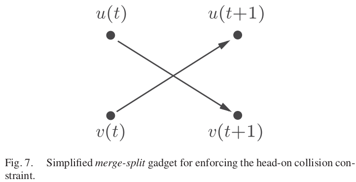
Figure 15: source
- Better encoding of the collision constraints
- Reachability analysis
- Divide-and-Conquer Over the Time Domain
Experiments
Experiments (with 4-split optimization)
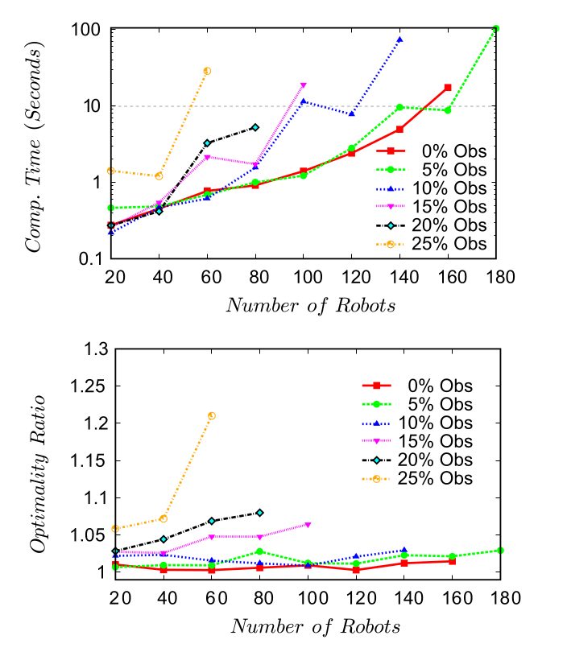
Figure 18: source
- The majority of the cases are solved within 10s
- Solutions for up to 180 robots, which translates to a maximum robot-vertex ratio of 44%
My Experiments
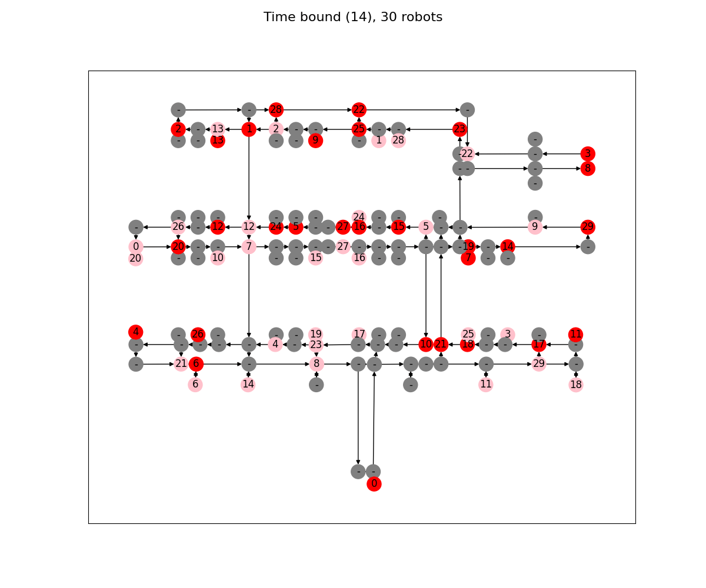
Figure 19: source
- pink – agents
- red – goals
- green – finished
Conclusions (subjective)
- Search-based:
- No fancy ILP.
- No guarantees, but it should work fair for most cases.
- Ready for real-time (with the proper implementation).
- Network-flow:
- A single-commodity case can be used for cluster formation tasks.
- Guarantees of optimality (without optimizations).
- Doesn’t scale (without optimizations).
Papers
Search-based:
- “Cooperative Pathfinding”, D. Silver. AIIDE 2005.
- “Cooperative Pathfinding”, D. Silver. AI Game Programming Wisdom 3, pages 99–111, 2006.
Netowok flow-based: